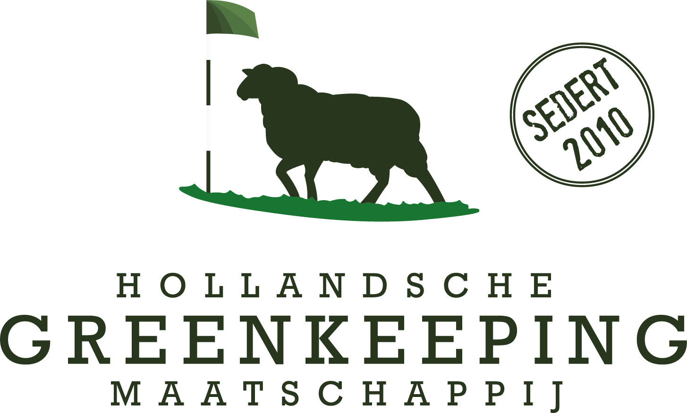

Elke ochtend staat de dagplanning klaar en wordt elk stuk werk vastgelegd. Per hole, per dag, voor iedereen terug te zien.

HGM Golf OnderhoudStoringen, taken en machines van uw baan op één plek. Gemeld in het veld, opgepakt door de juiste persoon.
Elke green, sprinkler, klep en leiding staat op de kaart, met de hele onderhoudshistorie erbij.